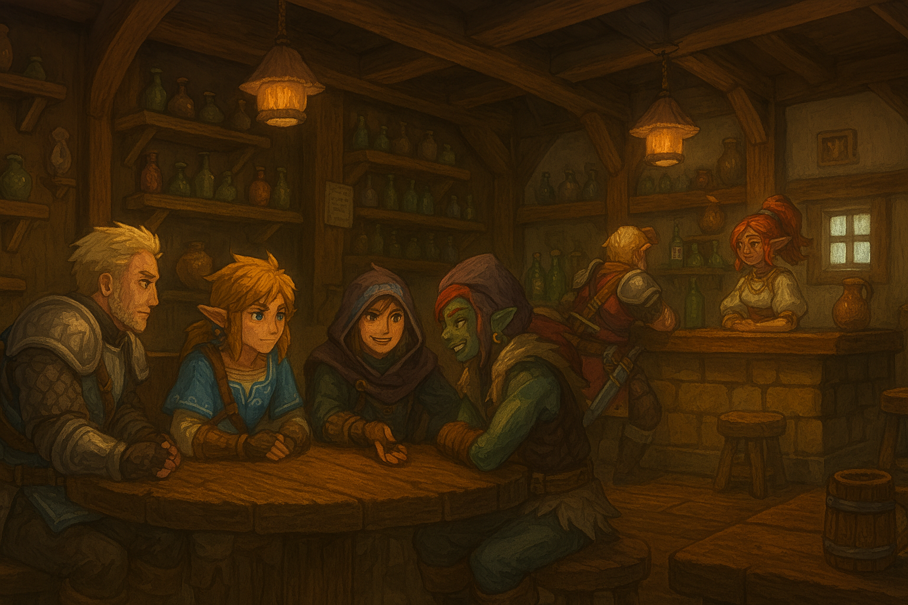
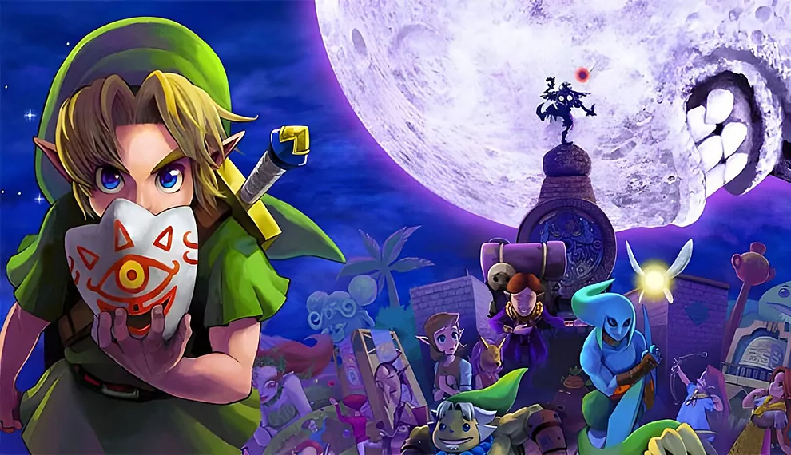
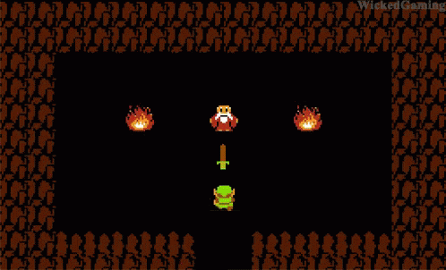
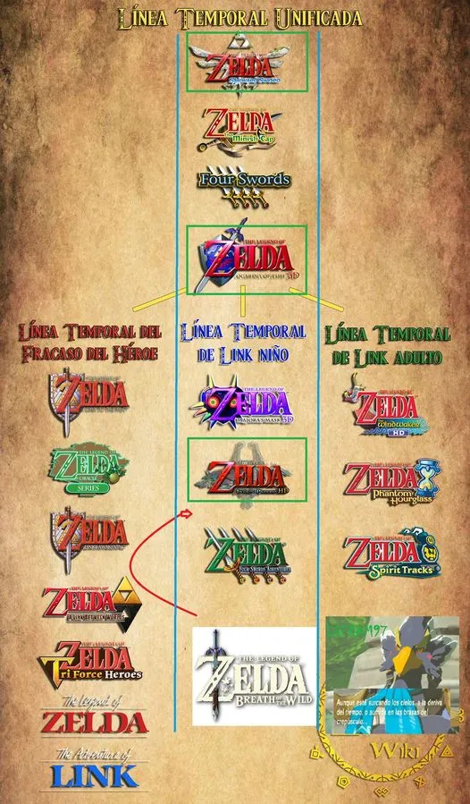
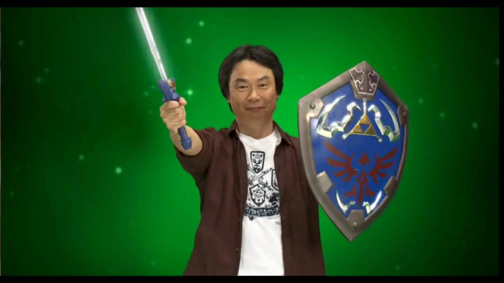
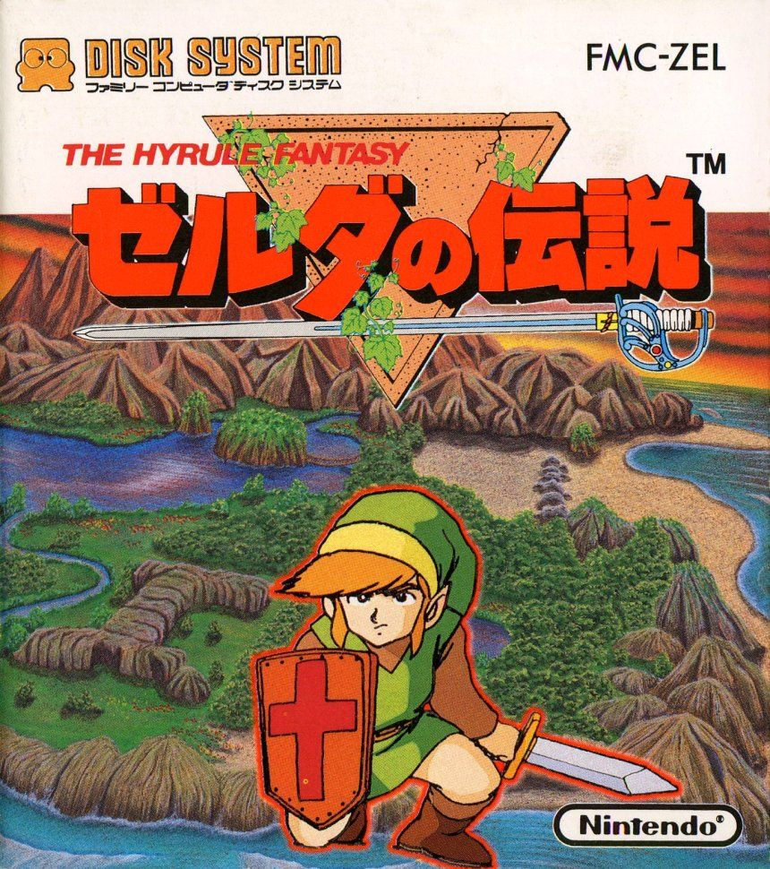

Curiosidades varias de la saga The legend of Zelda

En la taberna de Kakariko, los diversos aventureros de hyrule se reunen para compartir historias
y leyendas sobre la saga de The Legend of Zelda, muchos de ellas desconocidas para
los habitantes de estas tierras...
Curiosidad 1: La tribu Marajoara

Aunque no se ha confirmado, hay un rumor que dice que la palabra «Majora» del juego
Majora's Mask tiene su origen en una tribu brasileña llamada Marajoara. En esta muchos
de sus integrantes usan máscaras con símbolos tribales. Para quienes no conozcan el juego,
en Majora's Mask las máscaras (válgase la redundancia) son muy importantes
Curiosidad 2: Se empezaba originalmente con una espada

Es una de las secuencias que menos podemos olvidar del juego
- “It’s dangerous to go alone” / “Es peligroso ir solo”. Link accede a la
primera cueva y se encuentra con un anciano que le habla y le da por primera vez una espada.
¿Por qué la espada es entregada por un anciano en un lugar tan extraño? Pues… ¡para hacer
el juego un poco más confuso! Nintendo se centró mucho en The Legend of Zelda antes de su lanzamiento
, pero la mayoría de los jugadores se quejaron de que el juego lleva a confusión o directamente
tienden a perderse sin saber qué hacer. Pero en lugar de arreglar el juego, un malhumorado Miyamoto
insistió en hacer cambios que lo convirtieran todavía en más complejo, incluyendo el hecho de comenzar
la aventura sin medios para defenderse.
La lógica que tuvo Miyamoto para hacerlo tan complicado es que los niños compartieran
entre ellos información y fomentar de esta forma el sentido de comunidad en torno al juego…
¡y vaya si funcionó! Cualquiera que hubiese vivido los años 80 en los patios sabe que The Legend of Zelda
fue uno de esos juegos que daban pie a la conversación.
Ah, y por cierto, no importa lo que tus amigos te dijeron cuando eras niño, no puedes completar
el juego sin utilizar la espada. Puedes conseguir prácticamente llegar hasta el final
del juego sin la espada pero… te han hecho perder el tiempo porque necesitas una espada para acabar con Ganon.
Curiosidad 3: El Zelda original se lleva a cabo en la parte cronológica más oscura

A diferencia de la mayoría de las franquicias de Nintendo,
la saga Zelda nunca se ha conseguido alejar de la materia oscura. Muerte,
destrucción y la sangre son transmitidas generación tras generación en The
Legend of Zelda, pero el Zelda original de NES puede ser el más oscuro de todos.
Hace un par de años, en la celebración del 25 aniversario de Zelda, Nintendo lanzó el
famoso Hyrule Historia, un libro de tapa dura que contiene muchísimo arte de Zelda y sí,
contiene como sabemos la cronología de Zelda. La esencia de esta cronología se basa en los
acontecimientos de Ocarina of Time, donde se divide en tres partes – una parte donde Link
derrota a Ganon en el futuro y se mantiene allí, otra cuando derrota a Ganon y regresa al pasado y la
tercera y última, la que la mayoría de los aficionados ni siquiera han considerado, ocurre cuando
Link es derrotado por Ganon. El The Legend of Zelda original es el resultado de que Link acaba
pateado por Ganondorf… o vamos a decirlo claramente, acaba muerto a manos de Ganon.
De la misma forma, ¿Dónde se encuentran las ciudades y todas esas
cosas en el juego original? Todos los juegos posteriores a éste…
¡las han tenido! Bueno, no están porque el Hyrule del mítico The Legend
of Zelda representa una fuerte caída de su civilización, prácticamente
destruida y donde los únicos y últimos habitantes de Hyrule son ancianos
y ancianas extraños escondidos en cuevas. ¿Y ese viejo y retorcido árbol
que te da acceso a la primera mazmorra? El Árbol Deku muerto hace mucho tiempo.
La mayoría de los juegos de Zelda describen a Hyrule como un lugar para
el descontento, con elementos del mal en cada una de sus esquinas, pero las
tierras que exploras en el mítico Zelda original es una apocalíptica tierra baldía.
Curiosidad 4: La poca preocupación de los padres de Miyamoto

La saga de The Legend of Zelda no existiría si los padres de Miyamoto hubieran estado más
pendientes de él. Cuando Miyamoto era niño, sus padres no tenían mucho dinero, así que el genio
no tenía muchos juguetes.
Por esa razón, salía a explorar los alrededores, lo cual lo llevó a vivir miles de aventuras.
En una de ellas, encontró un agujero oscuro, con lo que al día siguiente se presentó ahí de nuevo,
equipado con linterna y descubrió un pequeño sistema de cavernas subterráneo. The Legend of Zelda se
inspira en muchos momentos de su infancia.
Curiosidad 5: El nombre inicial del juego era “The Hyrule Fantasy”

Muchas, muchas veces el pobre Link es erróneamente llamado “Zelda” por la gente que está desinformada.
Y es que, ¿por qué los juegos tienen el título “The Legend of Zelda” si el verdadero héroe es Link?
Eso es debido a que realmente el juego fue concebido bajo el nombre de “The Hyrule Fantasy”, ya que
el juego se basa más en la exploración del reino de Hyrule más que en cualquier otra cosa, y
“Legend of Zelda” no era más que el subtítulo del juego. Sin embargo, en Norteamérica acabó adoptando
el subtítulo como título principal y “The Hyrule Fantasy” desapareció, quizás porque
“The Legend of Zelda” le daba más misterio y profundidad al título. Sea como fuere, al final
Japón se acabó influenciando de esta decisión y adoptó también el título que hoy día conocemos.
Curiosidad 6: Al hablar del hombre viejo, una de sus pistas más complicadas tardó en resolverse 25 años
Así que la mayoría de las sugerencias de este maldito hombre viejo son completamente inútiles.
Esto se debe a problemas de traducción y de una extraña decisión de Nintendo para cambiar muchas
de los textos con pistas todavía más complejas.
Uno de los consejos más desconcertantes era “El décimo enemigo tiene la bomba”. ¿Qué diablos significa esto?
Los jugadores, por supuesto, contaban los enemigos que iban matando, pero no veían que por llegar al décimo enemigo aniquilado
te dieran una bomba. Bueno, pues después de décadas de confusión se encontró la respuesta al enigma,
– resulta que es necesario tener una bomba en el inventario que, al matar a nueve enemigos sin ser
golpeado y acabar con el décimo con una bomba… obtienes una bomba. Siempre funciona, pero…
¿para qué molestarse en hacer algo así? Esto tiene que ser algo más que una simple pista inútil
en la historia de los videojuegos.
Ahora, en la versión japonesa el anciano da una pista en cuanto a la búsqueda de la llave
león que se encuentra en la mazmorra – una pista más que útil! ¿Por qué Nintendo lo
reemplazó con esta oscura técnica para el lanzamiento en los Estados Unidos?
Es un secreto no resuelto.
Curiosidad 7: Más dificultad
"The Legend of Zelda" incluía una segunda misión que se activaba solo tras haber completado
la primera. Esta nueva aventura era más difícil, otorgaba a los enemigos nuevos poderes y
añadía a Link nuevas habilidades. Aunque la mayoría no pudo completarla por la gran dificultad
que contenía.